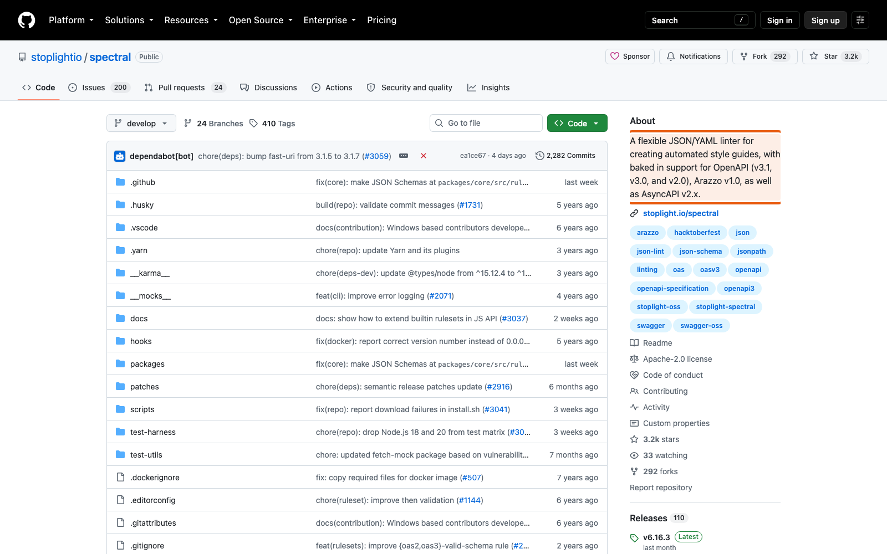

Справочник «Стандартизация HTTP API» · модуль 6 · Стандарт и его проверка
Глава 6.2
Линтер
Spectral
Правила из предыдущей главы нужно кому-то проверять. Часть из них — те, что видны прямо в описании OpenAPI, — проверяет линтер: программа, которая читает контракт и сообщает о нарушениях. Разберём готовый набор правил, напишем два своих и посмотрим на настоящий вывод с ошибками.
- Категория
- Стандарт
- Уровень
- Средний
- Связанные главы
- 6.1 API Style Guide · 6.3 Контрактные тесты · 6.4 CI
- Зачем это знать
- Чтобы правила стиля проверялись сами, а не глазами на ревью
§1Что такое линтер описания
Spectral читает файл описания OpenAPI и проверяет его по набору правил. Он не запускает сервис и не отправляет запросов — работает только с текстом контракта. Отсюда сразу видно, что ему доступно, а что нет: всё, что записано в описании, он проверит; всё, что живёт только в поведении, — не увидит.
npx @stoplight/spectral-cli@6.16.3 lint openapi/openapi.yaml --fail-severity=warn
No results with a severity of 'warn' or higher found!
Обратите внимание на закреплённую версию @6.16.3: если её не указать, завтра выйдет новая, добавит правило, и сборка упадёт без единого изменения в вашем коде. Мы уже сталкивались с этим правилом в главах 3.4 и 5.2 — фиксируйте версии внешних инструментов всегда.
§2Готовый набор spectral:oas
Писать правила с нуля не нужно: в Spectral встроен набор spectral:oas — десятки проверок для описаний OpenAPI. Он ловит и формальные ошибки (описание не соответствует схеме формата), и содержательные упущения.
info заполнены контакты владельца API. Ровно то требование Zalando 218, о котором шла речь в главе 3.2.infooperationId. Без него генераторы клиентов придумывают имена сами.операции
spectral:oas встроен: подключать его отдельно не нужно, достаточно строки extends.В файле настроек проекта эти правила перечислены отдельно, чтобы повысить их уровень до error: включены они и по умолчанию, но в этом проекте отсутствие контактов считается ошибкой, а не предупреждением.
§3Файл настроек проекта
extends: - spectral:oas rules: info-contact: error info-description: error operation-operationId: error operation-tags: error path-params: error # Собственные правила проекта из docs/API_STYLE_GUIDE.md …
§4Своё правило: из чего состоит
Собственное правило описывается четырьмя частями. Разберём их на правиле про имена путей.
paths-no-verbs: description: URI MUST описывать ресурс существительным, а не действием. severity: error given: "$.paths" then: field: "@key" function: pattern functionOptions: notMatch: "/(get|create|update|delete|remove|add)[A-Za-z]*(/|$)"
error, warn, info, hint.насколько важноpaths целиком.где искать@key — сам адрес) и убедиться, что он не совпадает с образцом из глаголов.что проверятьОсобое значение @key означает «проверяй не значение, а имя поля». Это нужно там, где смысл несёт именно имя: адрес в paths, название свойства в схеме. Без него правило проверяло бы содержимое, а не заголовок.
§5Три правила учебного проекта
error-responses-use-problem-json:
description: Ответы 4xx и 5xx MUST использовать application/problem+json.
severity: error
given: "$.paths[*][*].responses[?(@property.match(/^[45]/))]"
then:
field: content
function: schema
functionOptions:
schema:
type: object
required: [application/problem+json]Выражение в given читается так: во всех путях, во всех операциях, среди ответов взять те, чей код начинается с 4 или 5. Дальше у каждого проверяется, что в content есть ключ application/problem+json. Это правило из главы 4.1, доведённое до автоматической проверки.
json-properties-snake-case: description: Свойства JSON MUST быть записаны в snake_case. severity: error given: "$.components.schemas[*].properties" then: field: "@key" function: casing functionOptions: type: snake
Здесь используется готовая проверка casing — писать образец вручную не нужно. Правило смотрит на имена свойств всех схем сразу, поэтому уследить за единообразием в описании из тысячи строк больше не требуется.
paths-no-verbs: # разобрано в §4Три правила — немного, и это нормально. Набор растёт по мере того, как в ревью повторяется одно и то же замечание: заметили третий раз — превращайте в правило.
§6Настоящий вывод на плохом контракте
Проверим, что правила работают. Возьмём описание учебного сервиса и намеренно испортим его в двух местах: переименуем created_at в createdAt и заменим адрес /api/v1/tickets/open на /api/v1/getTickets.
npx @stoplight/spectral-cli@6.16.3 lint bad.yaml --fail-severity=warn
bad.yaml
209:22 error paths-no-verbs URI MUST описывать ресурс существительным,
а не действием. paths./api/v1/getTickets
581:19 error json-properties-snake-case Свойства JSON MUST быть записаны в snake_case.
components.schemas.Ticket.properties.createdAt
✖ 2 problems (2 errors, 0 warnings, 0 infos, 0 hints)- Строка и столбец.
209:22— точное место в файле, можно открыть и поправить. - Уровень и имя правила. По имени правило находится в
.spectral.yaml, а оттуда — в стандарте. - Текст описания. Тот же, что был записан в правиле: человек сразу видит, что именно нарушено.
- Путь внутри документа.
components.schemas.Ticket.properties.createdAt— где в структуре описания сидит нарушение. - Итог. Две ошибки — значит, ненулевой код возврата, и сборка не пройдёт.
Линтер выдаёт результат сразу после запуска и применяет одни и те же правила к любому изменению. Замечание человека приходит позже и может быть пропущено. За счёт этого на ревью остаются вопросы, которые проверить программой нельзя.
§7Уровни и порог падения
У каждого правила есть уровень, а у запуска — порог, начиная с которого проверка считается провалившейся.
| Уровень | Смысл | Соответствие стандарту проекта |
|---|---|---|
error | Нарушение обязательного правила | MUST |
warn | Нарушение рекомендации | SHOULD |
info | Замечание к сведению | — |
hint | Подсказка, как сделать лучше | MAY |
В учебном проекте запуск идёт с ключом --fail-severity=warn: падает не только на ошибках, но и на предупреждениях. Выбор строгий и сделан намеренно: описание учебного стенда небольшое, и держать его без замечаний проще, чем вести список «известных предупреждений».
--fail-severity=warn. Годится, когда описание маленькое или проект молодой. Держит контракт в чистоте с первого дня.
--fail-severity=error. Нужен большому существующему API: сначала останавливают появление новых ошибок, потом постепенно вычищают предупреждения.
§8Чего линтер не проверяет
Ограничение то же, что у oasdiff из главы 5.2: линтер видит описание, а не поведение.
| Правило стандарта | Проверяет линтер? | Чем проверяется |
|---|---|---|
| Адреса без глаголов | да | paths-no-verbs |
| Свойства в snake_case | да | json-properties-snake-case |
| Ошибки в формате Problem Details в описании | да | error-responses-use-problem-json |
| Сервис действительно отвечает Problem Details | нет | тесты поведения, глава 6.3 |
201 приходит с заголовком Location | нет | тесты поведения |
| Выгруженный файл совпадает с кодом | нет | export_openapi.py --check |
| Изменение не ломает клиентов | нет | oasdiff, глава 5.2 |
Отсюда состав сборки, который мы разберём в главе 6.4: линтер, тесты и сравнение версий — три разные проверки, каждая закрывает свою часть стандарта, и ни одна не заменяет остальные.
§9Частые ошибки
§10Проверьте себя
- Что читает Spectral и почему он не может проверить, что сервис вернул
201сLocation? - Из каких четырёх частей состоит своё правило? Объясните назначение каждой.
- Что означает
@keyв полеfieldи почему без него правило про snake_case не сработает? - Прочитайте выражение
$.paths[*][*].responses[?(@property.match(/^[45]/))]словами. - Чем отличается запуск с
--fail-severity=warnот--fail-severity=errorи когда какой выбирают? - Назовите три правила стандарта, которые линтер проверить не может, и скажите, чем они проверяются.
spectral-cli@6.16.3 lint--fail-severity=warndescriptionseveritygiven (JSONPath)then (функция)error-responses-use-problem-jsonjson-properties-snake-casepaths-no-verbsописание — даповедение — нетСправочник «Стандартизация HTTP API» · модуль 6 · глава 6.2Макаров Максим Николаевич